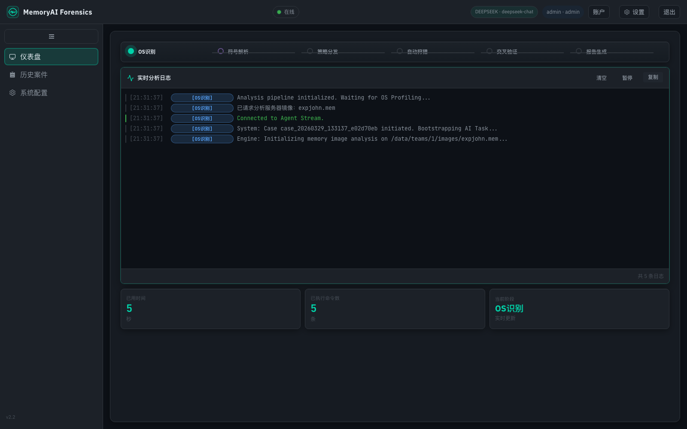

公开展示 / 数字取证
MemoryAI Forensics
从内存镜像到证据报告。
整合 AI 工作流、Volatility 与 YARA，展示取证分析与案件管理的完整流程。
公开展示仓库，完整实现位于私有仓库。

从研究问题出发，把思考落到工具与实践中。
公开展示 / 数字取证
从内存镜像到证据报告。
整合 AI 工作流、Volatility 与 YARA，展示取证分析与案件管理的完整流程。
公开展示仓库，完整实现位于私有仓库。

MemoryAI Forensics 为公开展示仓库；CPR Excel Companion 为实验性项目。适用范围、安装方式与兼容版本以各仓库说明为准。Xiaomi Photo Recovery 提取仍可访问的缓存媒体，不能恢复已覆盖的数据。